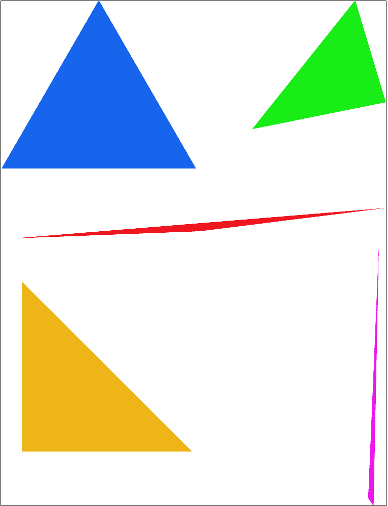
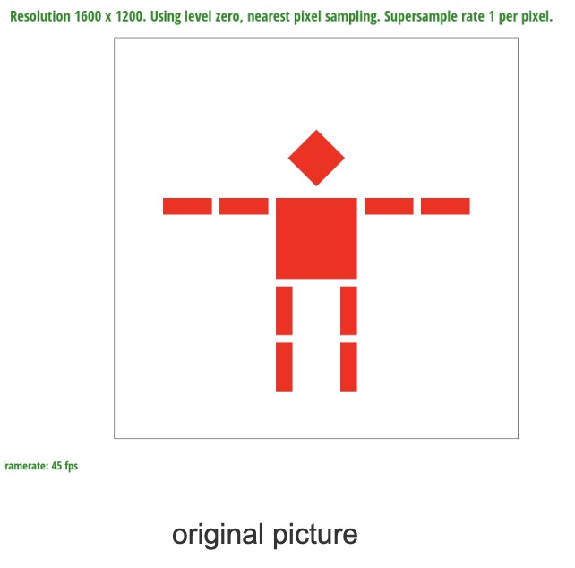
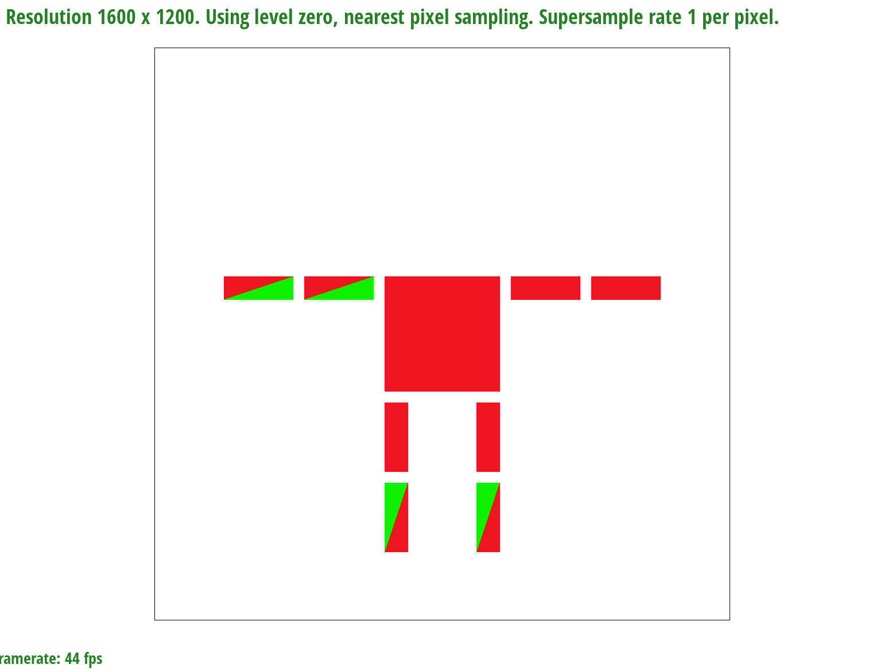
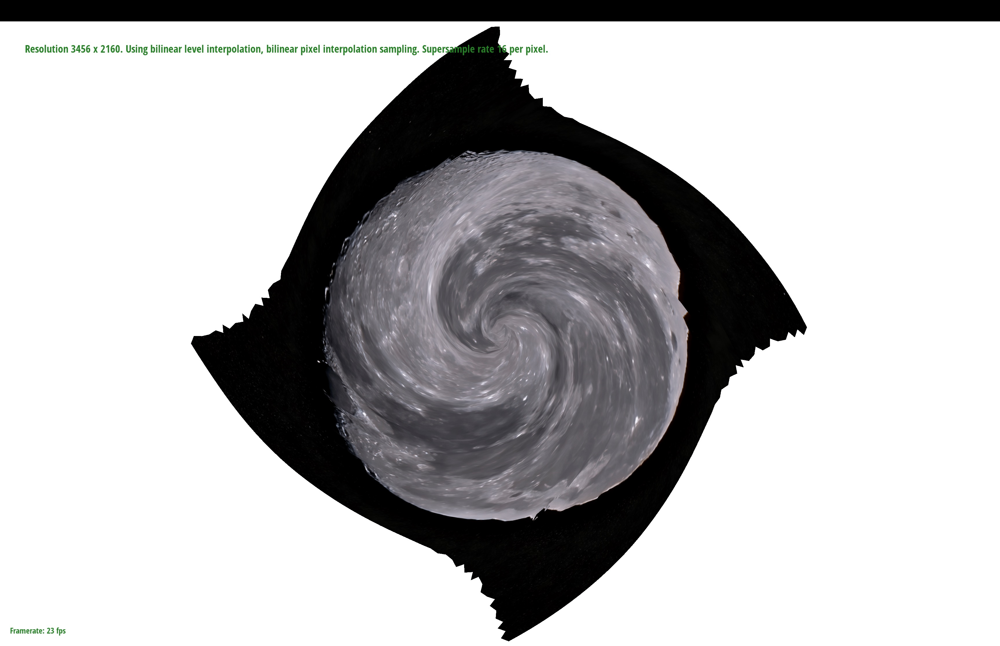

Overview
Section I: Rasterization
Part 1: Rasterizing single-color triangles
For each middle point of the pixel we calculate three signed triangle areas created by the middle point and three points on the triangle. The formula for the signed area of a triangle can be derived from the cross product of two vectors. Suppose we have point A (ax, ay) and B (bx, by), then the signed area of the parallelogram they form is given by the magnitude of their cross product: |ax * by - ay * bx|.
float L0 = -(x - x0) * (y1 - y0) + (y - y0) * (x1 - x0); float L1 = -(x - x1) * (y2 - y1) + (y - y1) * (x2 - x1); float L2 = -(x - x2) * (y0 - y2) + (y - y2) * (x0 - x2); In code above, the vectors A and B are formed by the edges of the main triangle and the lines connecting (x, y) to the opposite vertices The signed triangles is computed using the formula above, with negative values indicating the point (x, y) is outside the triangle and positive values indicating that it is inside the triangle. For a point lying on an edge of the triangle, we consider it as inside the triangle.
Algorithm Efficiency
To make sure our algorithm is no worse than one that checks each sample within the bounding box of the triangle, we use the bounding box as shown below. Since we are exactly checking all the pixels within the tightest bounding box, the algorithm cannot be worse than one that checks each sample within the bounding box of the triangle.
float x_min = min(x0, min(x1, x2)); float x_max = max(x0, max(x1, x2)); float y_min = min(y0, min(y1, y2)); float y_max = max(y0, max(y1, y2)); Part 2: Antialiasing by Supersampling
Algorithm
- Iterate each pixel inside the bounding box.
- Iterate each sampling point inside the pixel
- If the sampling point is inside or on the edge of the triangle we append the corresponding color on that sampling point to the value col.
- Divide the col by the number of sampling points to get the average color.
- Set the pixel color to the average color.
Supersampling is useful for antialiasing because it can reduce the aliasing artifacts by sampling the color of multiple points within a pixel and taking the average of the colors. This can reduce the aliasing artifacts such as jaggies and staircases as shown in the figures below.
|
|

|
|
Part 3: Transforms
|

|

|
We changed the transform(0, -100) to transform(0, 0), so the head was removed. Pretty funny.
Section II: Sampling
Part 4: Barycentric coordinates
Barycentric coordinates are a way to express a point inside a triangle as a weighted sum of the triangle's
vertices. A point P inside the triangle ABC can be interpreted as
P = alpha * A + beta * B + gamma * C, where alpha + beta + gamma = 1. This is useful for
texture mapping because we can use the barycentric coordinates to determine the texture coordinates of a point P
inside the triangle. We can then use the texture coordinates to sample the texture and get the color of the point
P.
float alpha = ((y1 - y2) * (x - x2) + (x2 - x1) * (y - y2)) / ((y1 - y2) * (x0 - x2) + (x2 - x1) * (y0 - y2));
float beta = ((y2 - y0) * (x - x2) + (x0 - x2) * (y - y2)) / ((y1 - y2) * (x0 - x2) + (x2 - x1) * (y0 - y2));
float gamma = 1 - alpha - beta;
Now we can use the barycentric coordinates to determine the texture coordinates of the point P. We can then color the point P using the texture coordinates.
Color color = alpha * c0 + beta * c1 + gamma * c2;
Part 5: "Pixel sampling" for texture mapping
We can use the barycentric coordinates to determine the texture coordinates of the point P. We can then color the point P using the texture coordinates. Texture mapping is done by sampling the texture at certain points and using those samples to compute the color of the pixel.
- Nearest neighbor sampling: selects the color of the texture at the closest texture element to the sampled point.
- Bilinear sampling: Tasks the average of the colors of the four closest texture elements to the sampled point.
- Nearest: This method can produce pixelated and jagged edges, as it simply selects the color of the closest texel to each pixel.
- Bilinear: This produces a smoother image but it blurs the texture slightly when magnified too much as shown in sampling 1 per pixel, as the averaging the colors of the texels can cause the texture to lose its sharpness.
When the point is on the edge of an object (high frequency) area. For example
(0, 0, 0) (255, 255, 255)
P
(0, 0, 0) (255, 255, 255)
- Nearest: P = (0, 0, 0) or (255, 255, 255)
- Bilinear: P = (128, 128, 128)
Part 6: "Level sampling" with mipmaps for texture mapping
For shapes and objects that doesn't require full definition rendering on screen, such as distant objects in a 3-dimensional scene, we can use Mipmap to save space. Using Mipmaps, we can use make the rendering more efficient and eliminate most of the artifacts caused by aliasing (when high frequencies are under sampled). In level sampling we first calculate which level of the texture mipmap we should use based on the differential elements that basically captures how much screen area a certain texture is using, and use the size (level) based on that. We then sample the texture at the level we calculated and use the color of the sampled point to color the pixel. This method produces a good quality image, as it samples the texture at multiple levels of the mipmap. This method is less expensive than pixel super sampling, as it requires less memory and less computation since the mipmap takes up a constant amount of memory. But for some textures, especially those with perspective that's not parallel to the screen, this method can be suboptimal when compared to pixel super sampling.
Describe the tradeoffs between speed, memory usage, and antialiasing power between the three various techniques: pixel sampling, level sampling, or the number of samples per pixel.
- Pixel sampling: this method is the cheapest, as it requires the least memory and the least computation, looping through all the pixels and sampling once per pixel. But it produces a poor quality image, as it produces pixelated and jagged edges.
- Level sampling: This method produces a good quality image, as it samples the texture at multiple levels of the mipmap. This method is less expensive than pixel super sampling, as it requires less memory and less computation since the mipmap takes up a constant amount of memory. But for some textures, especially those with perspective that's not parallel to the screen, this method can be suboptimal when compared to pixel super sampling.
- Super sampling: This method produces the best quality image, as it samples the texture at multiple points per pixel. This method is the most expensive, as it requires the most memory and the most computation, as it requires looping through all the pixels and sampling multiple times per pixel.
Some examples of combinations of the sampling methods
|

|
|
|

|